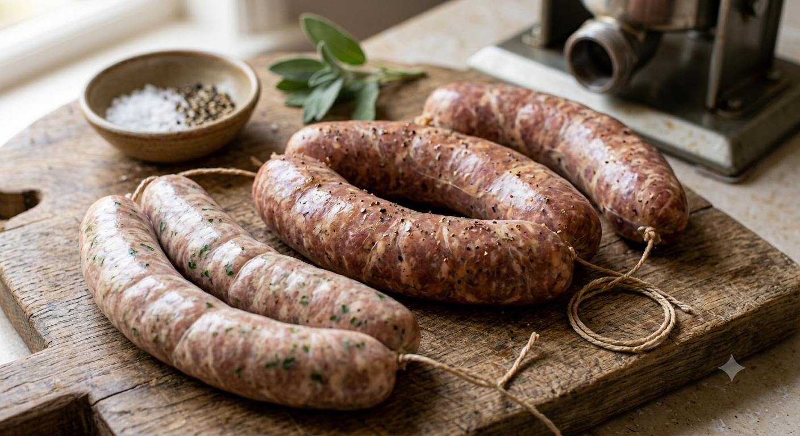
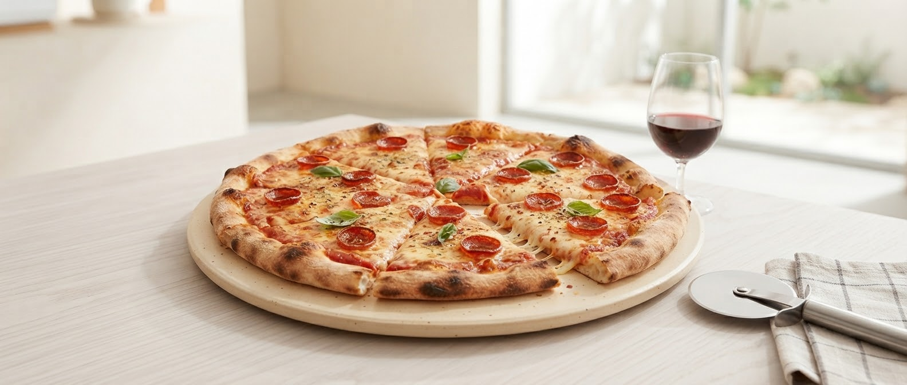
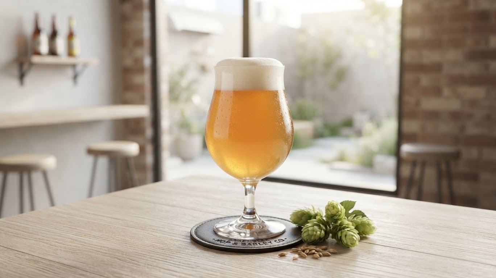

「シュパーゲル」は、ドイツで研鑽を積んだシェフによる本格派ドイツ料理店です。
看板メニューの「丸鶏ロースト（ヴィーズンヘンドゥル）」は、盛岡で唯一提供している逸品。カリッと香ばしい皮と、溢れ出すジューシーな肉汁。その丁寧な仕事が、地元常連客や観光客から厚い支持をいただいています。
落ち着いた間接照明のなか、多種多様なドイツビールと共に、心ゆくまで伝統の味をお楽しみください。

「何から頼めばいいかわからない…」そんなドイツ料理初心者のお客様に向けて、自家製ソーセージや名物丸鶏ロースト、おすすめビールが一度に楽しめる 「ビギナーズ・ジャーマンセット」を近日リリース予定！これ一つで本場の魅力を余すことなく体験できます。
最初に食べてほしい、肉の旨味が詰まった自慢の一本。
盛岡唯一。外はカリッと中はジューシーな名物。
料理と最高にマッチする、本場の味わい一杯。
Wiesnhendl - ヴィーズンヘンドゥル
じっくりと時間をかけ、皮はクリスピーに、身はしっとりと。 ドイツのオクトーバーフェストを象徴するこの味を、ここ盛岡で。 一口食べれば、そこはもうミュンヘンのお祭り広場です。
一本一本丁寧に仕込まれた、美味しさを詰め込んだ原点の味。

癖になるシンプルな美味しさ。一度は食べていただきたい人気メニュー。

豊富なラインナップ。酸味と苦味が響く、通好みの本格派。
「店内は小洒落てて、大人な雰囲気です。ソーセージ盛り合わせは絶対注文してほしい一品。店主は無口な感じですが、実はとても親切。料理も美味しくてつい つい色々頼んでしまいます。」
「お酒も食事もとっても美味しい！ピザが特に美味しくて、1度食べてもらいたい！！店主さんも見えるところにメニューを動かしてくれたり親切な方でした✨️」